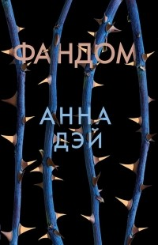
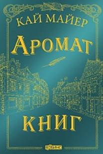
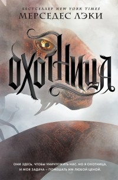
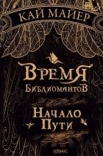

|
|
|||
|
Издательство: Росмэн Серия: Последний Маг Цикл: Последний маг Язык: Русский Виртуозная
воровка Эста живет в Нью-Йорке, населенном не только обычными людьми, но и
магами. Вот только магов здесь ненавидят. Борьбу с ними возглавляет
могущественный и грозный Орден Золотой Зари. Если никто не остановит Орден,
магам не выжить. Но у кого хватит на это сил и
знаний? Эста считает, что на такое способен только ее наставник – старый,
мудрый маг профессор Локлен. Девушка готова
выполнить любое его задание и с радостью отправляется в прошлое за мифической
«Книгой Тайн», которая поможет сразиться с Орденом.  Год
издания: 2018 Издательство:
Робинс Серия:
Робинс Pocket Цикл:
Последний маг Язык:
Русский Что, если бы вы смогли прожить один день из жизни
вымышленного героя вашего любимого фильма? Было бы здорово, не правда ли? Но
вы понимаете, что не умеете стрелять из лука, ловко лазить по деревьям, и у
вас абсолютно нет навыков выживания в этом неизведанном вымышленном мире.
Стало страшно? Не беспокойтесь, вы всегда сможете вернуться в свою безопасную
привычную жизнь и остаться лишь зрителем. Или не сможете?... С Виолой произошло именно это - она попадает в
антиутопический мир своего любимого фильма. Ей приходится встать на место
главной героини и пережить всё то, что пережила она. Но, оказывается, Виола
любит свою реальную жизнь больше, чем могла предположить… Год
издания: 2019 Издательство: Робинс Серия: Время Библиомантов Цикл: Время библиомантов, приквел Язык: Русский
Год издания: 2019 Издательство:
Эксмо - Пресс Серия:
Охотница. Фэнтези Мерседес Лэки Цикл:
Охотница Язык:
Русский Мир после
катастрофы полон страхов. Сотни чудовищ, о которых раньше слагали легенды и
мифы, обрушились на беззащитных людей. Но, к счастью, существуют Охотники.
Они не просто одарены магическими способностями, они готовы отдать свою
жизнь, чтобы спасти других. Именно так всегда думала Рада, одна из Охотниц,
воспитанная в Монастыре. Но с тех пор, как ей было приказано явиться в
столицу, девушка поняла: на самом деле этот мир устроен по-другому. С каждым
днем пришлецов становится все больше, но власть скрывает это от обычных
граждан. Охотники давно превратились из воинов в суперзвезд, а настоящие
герои погибают от рук таинственных злодеев. Рада должна понять, кто плетет
всю эту ложь и что ими движет. Но она и не подозревает, что охота ведется и
за ней самой…  Издательство: Робинс Серия: Время Библиомантов Цикл: Время библиомантов Язык: Русский «У каждой книги есть
своя тайна…» Несколько сотен лет безграничная сила книг хранилась обществом библиомантов в тайне. Волшебство, путешествие сквозь
время и пространство – это лишь малая часть того, что книги могут дать. С
помощью некоторых из них можно изменить даже прошлое. Фурия Саламандер Ферфакс потомственный библиомант,
самый сильный волшебник в древнем роду Розенкрейц,
который уже долгие годы скрывается от агентов Адамантовой Академии из-за
ошибки, совершенной в прошлом. Семья Ферфакс
охотится и уничтожает «пустые книги», способные стереть все когда-либо
написанное на Земле. Но у них есть враги куда страшнее Академии, жаждущие
кровной мести… Фурия теряет всех – любимого отца, младшего брата, всю свою
семью. Единственное, что ей остается – бороться. Главное, что рядом с ней
появляются верные друзья и любовь, которая прошла через века. Кто настоящий враг? Какова цена за спасение
брата? Чем грозит восстание экслибри? Почему
Антиква так отчаянно пытается получить книгу Зибенштерна?
За что борются мятежники Либрополиса? |
|||
|
ЧИТАЙТЕ ДЕВАЧКИ ИЛИ ЗА ВАМИ ПРИДЕТ ЗЛОЙ ДЯДЯ ВЛАД 2019 г. |
|||